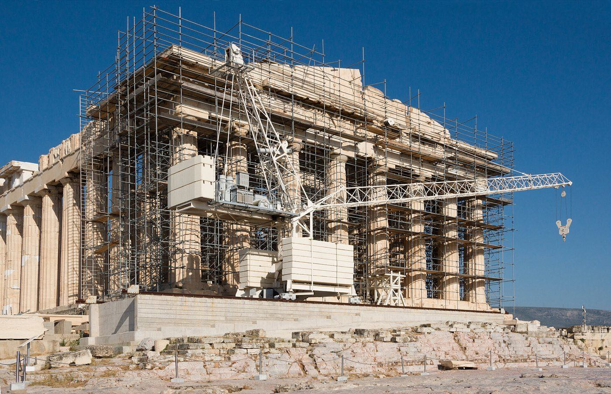
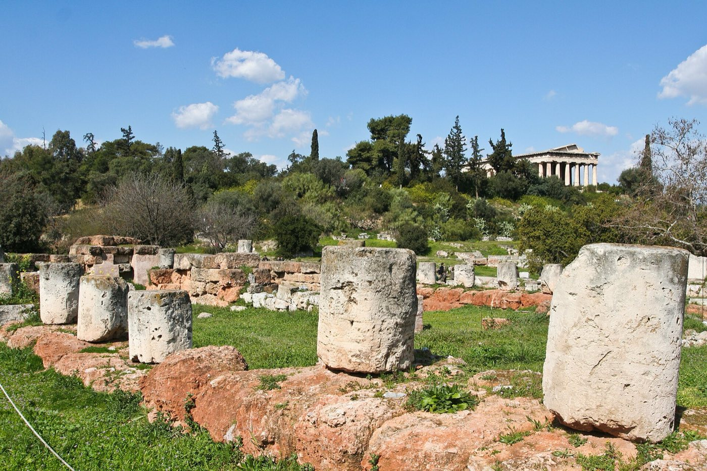

Athens · 3 days
3 Days in Athens: What You Actually Have to See
Everything in Athens is flexible except the one thing everybody comes for. The Acropolis sells timed slots against a daily cap of 20,000 people, it sits on bare rock with no shade anywhere on top, and in a heatwave the culture ministry shuts it from noon until five. That decision is taken on the day, with no published temperature threshold, and it has happened in three of the last four summers. So the rock goes on the first morning at eight, never on the last afternoon, and the rest of the trip is arranged to absorb the loss if the gates shut anyway.

Three days covers Athens well. The Acropolis and its museum, the Ancient Agora, the Roman ruins scattered through Monastiraki and Plaka, the National Archaeological Museum and a sunset from one of the hills all fit without rushing. The centre is small, most of it is walkable, and the metro handles the rest. Distance never decides anything here.
The Acropolis does. Since September 2023 the site has run on a daily cap of 20,000 visitors and hourly entry quotas, booked ahead through the national ticketing site: about 3,000 people in the eight o'clock hour, 2,000 in the next, and smaller numbers through the day. Once inside there is no time limit. It opens at 8am year-round and the closing time slides with the season, from 8pm in high summer down to 5pm from November, with last entry always 30 minutes before the gates shut.
Then there is the heat. In a heatwave the culture ministry closes the Acropolis between noon and 5pm, which it did in July 2023, twice in the summer of 2024 and again in July 2025. There is no published temperature that triggers it. The decision is made that morning and announced the same day, and the reason is obvious the moment you are up there: the rock is open limestone and marble with no tree, no roof and no shelter of any kind, and it reflects the sun back at you.
The plan that follows starts on the rock at eight on the first full day. Not because the light is good, though it is, but because a first-morning visit leaves two more days to try again. Save the Acropolis for the last afternoon and a single announcement at 11am can end the trip without it. Everything else in Athens survives a hot middle of the day, moves indoors, or waits.
The one unmissable sight is the one that can be cancelled on you. Book the 8am slot, go on your first full day, and treat the remaining days as the spare. The heat closure runs noon to 5pm, is decided that morning, and applies to the Acropolis itself. The museums, the Agora and the hills carry on regardless, which is why they fill the middle and end of every day below.
Day 1 — The rock at eight, then downhill into the cool
Book the first slot of the day and be at the gate a few minutes early. There are two ways in: the main west entrance below the Areopagus, which is the shortest walk up to the Propylaea, and the south-east entrance near the Acropolis Museum, which brings you up past the slope monuments. In the eight o'clock hour the west gate takes the coach groups, so the south entrance is usually the calmer start.
Wear shoes with grip. The path up and the rock on top are worn marble and limestone polished by millions of feet, and it is genuinely slippery, more so in the first hour if there has been any dew or rain. Sandals are a bad idea. An hour and a half to two hours covers the Parthenon, the Erechtheion with its caryatid porch, the Temple of Athena Nike and the view down over the city. Expect scaffolding and a crane on the Parthenon. The restoration has been running since 1975 and no visit in living memory has seen the building without it.
Coming down the south slope puts you past the Theatre of Dionysus, where Greek drama was first staged, and the Odeon of Herodes Atticus, which is still used for concerts every summer and is closed to walk into as a result. Both are on the same ticket.
Then go into the Acropolis Museum, which is a few minutes' walk from the south slope and is where the middle of the day belongs. It is air-conditioned, and the top floor holds the Parthenon Gallery: the surviving frieze and metopes mounted at the same orientation and spacing as the building, in a glass hall angled so the real Parthenon sits framed in the windows behind them. The gaps in that display, where the British Museum's sections are marked out in plaster, are the whole argument about the Elgin Marbles laid out without a word of commentary. Summer hours run to 8pm most days, Mondays to 5pm, and Fridays all the way to 10pm; winter is shorter except for the same late Friday. Photography is not allowed in the Archaic gallery.
Finish in Plaka and Anafiotika, the lanes of white Cycladic houses built into the north slope by island stonemasons in the 19th century. Dinner in Greece starts late, so there is no hurry.
The must-sees
On the rock before the day heats up, indoors while it peaks, and out again when it cools. This is the shape of every hot-season day here.
Day 2 — The Agora, the Roman city, and a hill at sunset
The Ancient Agora is the other half of classical Athens and it gets a fraction of the attention. This was the working city: law courts, market, the place Socrates argued in. The Temple of Hephaestus on the western ridge is the best-preserved Doric temple anywhere, more complete than anything on the Acropolis, and almost nobody queues for it. The reconstructed Stoa of Attalos along the eastern edge houses the site museum and is fully roofed, which makes it the place to be standing at midday.
North and east of the Agora, the Roman layer is scattered through a few walkable blocks: the Roman Agora with its Tower of the Winds, an octagonal marble clock and weather vane from the 1st century BC, and Hadrian's Library next to Monastiraki station. All of these, plus Kerameikos and the Temple of Olympian Zeus, are covered by a single combined ticket alongside the Acropolis, valid five days from first use. Whether that ticket is on sale varies between seasons, so check the official site at the moment you book the Acropolis slot.
Spend the hottest part of the afternoon indoors. The Benaki Museum and the Museum of Cycladic Art are both within a short walk of Syntagma and both work as a heat shelter with something in it.
Then Filopappou Hill for sunset, which is free, never closes and needs no ticket. The path up is shaded pine and the summit looks straight across at the Acropolis with the sea behind it. Lycabettus is higher and has a funicular, but it puts you so far above the Acropolis that the rock flattens into the city. Filopappou is the better view of the thing you came to see. If the dates include a Sunday, the full-dress Changing of the Guard in front of parliament at Syntagma runs at 11am, with the band and the whole formation; on other days a smaller version happens on the hour.

The must-sees
Three ancient sites within ten minutes of each other, a roofed museum for the worst of the heat, and a free hill at the end.
Day 3 — The spare day, and the museum that holds everything else
This day is deliberately the loosest of the three, because it is the insurance policy. If the Acropolis was shut for heat on day one, or the slot you wanted was gone, this is when you go back. Book a fresh early slot the evening before.
If the rock is already done, the National Archaeological Museum is the morning. It is a twenty-minute walk or a couple of metro stops north of the centre, and it holds the finds that the site museums do not: the gold of Mycenae including the mask Schliemann wrongly attributed to Agamemnon, the bronze Artemision god pulled out of the sea, the Antikythera mechanism, and room after room of sculpture. It keeps its own timetable, opening at 1pm on Tuesdays rather than in the morning and running on a seasonal schedule the rest of the week, so check the day before.
The afternoon is for whatever the first two days left out: Kerameikos, the ancient cemetery, which is the quietest archaeological site in the city; the Temple of Olympian Zeus and Hadrian's Arch; or the covered Varvakios central market on Athinas Street, which is a working meat and fish market, not a food hall.
The obvious temptation on a third day is Cape Sounion, a two-hour round trip down the coast for the Temple of Poseidon at sunset. It is a real trade, not an addition: it takes the whole late afternoon and evening. Worth it on a second visit to Athens, or if the Acropolis went smoothly and the city already feels covered.
The must-sees
Kept flexible on purpose. If the Acropolis was closed on day one, everything here moves and the rock comes first again.
When the Acropolis closes, by season
| Dates | Site closes | Last entry |
|---|---|---|
| 1 April – 31 August | 8pm | 7:30pm |
| 1 – 15 September | 7:30pm | 7pm |
| 16 – 30 September | 7pm | 6:30pm |
| 1 – 15 October | 6:30pm | 6pm |
| 16 – 31 October | 6pm | 5:30pm |
| 1 November – 31 March | 5pm | 4:30pm |
What three days does not cover
Cutting deliberately beats rushing. These need time this trip has already committed:
- Delphi. Three hours each way by road, and the best single day trip in Greece. It needs a fourth day, not a corner of a third.
- The islands. Hydra and Aegina are reachable from Piraeus in a day, but a day at sea is a day not in Athens, and the ferry timetable makes it an early start and a late return.
- Nafplio, Mycenae and Epidaurus. A full Peloponnese day, and the museum holdings in Athens make more sense once you have seen them, which is the wrong way round for a three-day trip.
- The Acropolis twice. Some people want the early slot and then a late one for the light. That is a good instinct and there is no room for it here, since the second slot is being held in reserve against the heat.
- Athens after midnight. The bars in Psyrri and Exarchia get going when the sightseeing day has long finished. Three 8am starts and that schedule are not compatible.
Common questions about 3 days in Athens
Is 3 days enough for Athens?
Yes for the essentials. Three days covers the Acropolis and its museum, the Ancient Agora and the Roman sites, the National Archaeological Museum, Plaka and a sunset from Filopappou, with a spare morning in case the Acropolis is closed. It does not cover Delphi, the islands or the Peloponnese.
Does the Acropolis close because of the heat?
Yes. During heatwaves the Greek culture ministry closes the site from noon to 5pm, as it did in July 2023, twice in summer 2024 and again in July 2025. There is no published temperature threshold and the decision is announced on the day. This is why the Acropolis belongs on your first full day and not your last.
What time should I book the Acropolis?
The 8am opening slot. It is the coolest hour, the light is at its best, and it sits before any heat closure could take effect. Entry runs on hourly quotas against a daily cap of 20,000, with roughly 3,000 places in that first hour, so book ahead through the official ticket site. There is no limit on how long you stay once you are inside.
Is the combined Athens ticket worth buying?
If you plan to see the Agora, the Roman Agora, Hadrian's Library, Kerameikos and the Temple of Olympian Zeus, yes. One ticket covers those plus the Acropolis and is valid five days from first use. Availability has varied between seasons, so check the official site at the time you book your Acropolis slot.
What should I wear to the Acropolis?
Closed shoes with grip. The path and the rock are worn marble and limestone, polished by foot traffic and slippery, especially after rain. Add a hat, water and sunscreen in summer, because there is no shade anywhere on the top.
Is the Acropolis Museum worth it if I have already seen the Acropolis?
Yes, and it works best right after. The top floor mounts the surviving Parthenon frieze at the building's own orientation, with the real Parthenon visible through the glass behind it, and plaster casts marking the sections held in London. It is also air-conditioned, which makes it the right place to be in the middle of a hot day.
Filopappou Hill or Lycabettus for sunset?
Filopappou. It is free, open, shaded on the way up, and it looks across at the Acropolis with the sea beyond. Lycabettus is higher and has a funicular, but from up there the Acropolis flattens into the city below instead of standing out of it.
Tailored to your trip
Travelling to Athens? Plan your trip around your real arrival and departure times.